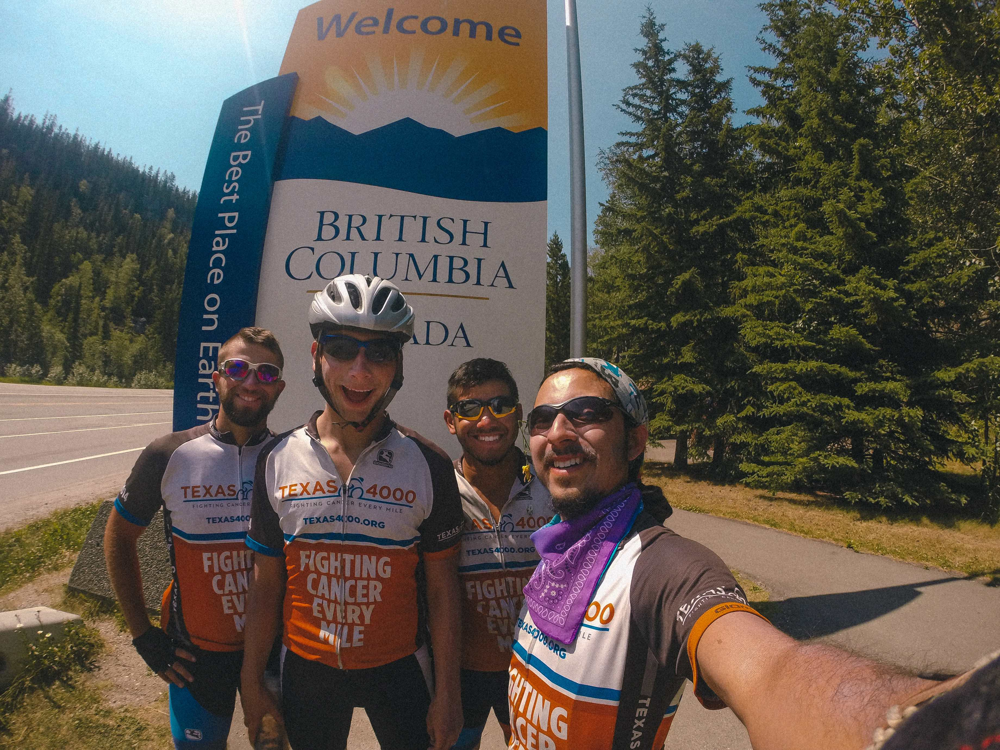
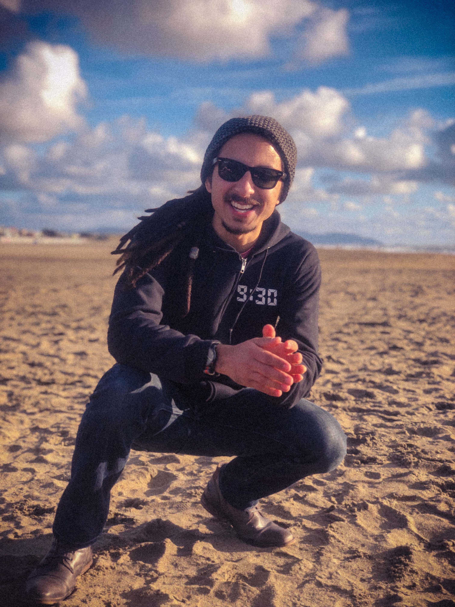

Anthony's Favorite Things
Anthony is an interesting person, well at least he thinks so. Below are Anthony's favorite things.
Cycling
Anthony loves cycling. He bikes any chance he can get. His favorite
cycling routes are Shoal Creek for a quick morning ride and 360 to get
out of Central Austin and get a good workout in.
Did you know that Anthony loves cycling so much that he
biked to Alaska?

Anthony at the British Columbia border with other cycling friends.
The Beach
Anthony loves the beach. He grew up close to Galveston, TX, and was
practically raised there. He was what the locals called a "beach bum",
although he sucks at surfing.
Can you guess what beach Anthony is at in this photo? Here's a
big hint!

Who wears jeans and boots at the beach? What an idiot.
Big Bend National Park
Anthony loves hiking. He was always outdoorsy, and visiting Big Bend is a
great way to hike while flexing his overpriced REI pullover. Here's Anthony in
front of Santa Elena Canyon.

I mean, how vain can Anthony be? Wasn't this assignment about favorite things, not a portrait gallery of Anthony?
Vote on which photo of Anthony was a little too extra
Please provide your name and contact info so Anthony can send you a signed headshot as a thank you for participating.